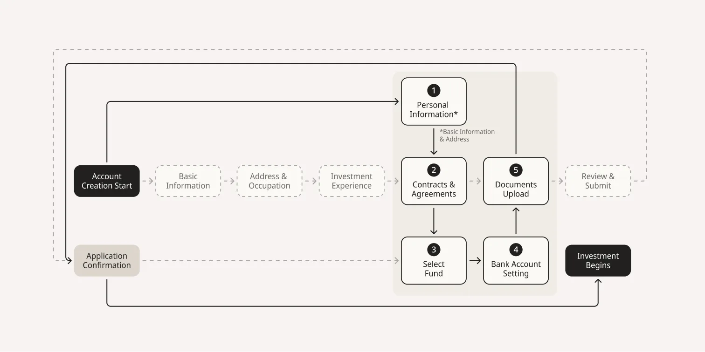
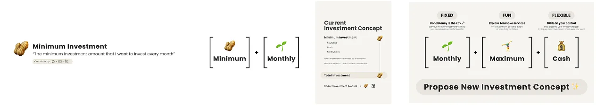
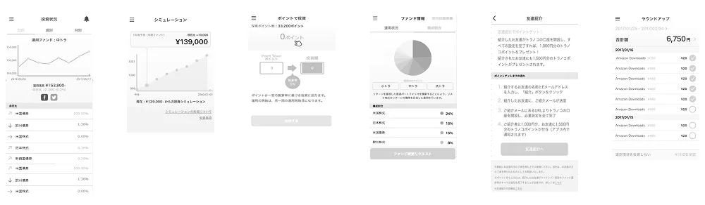
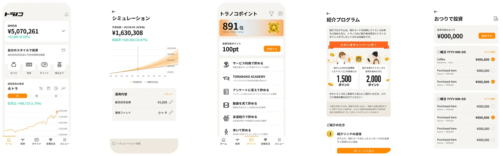
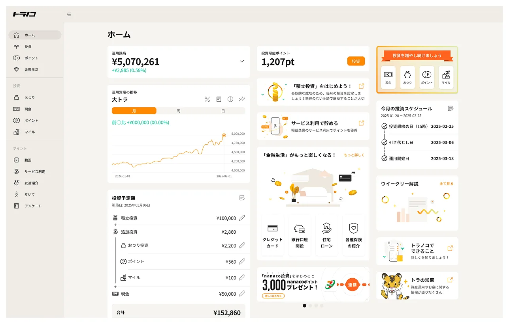
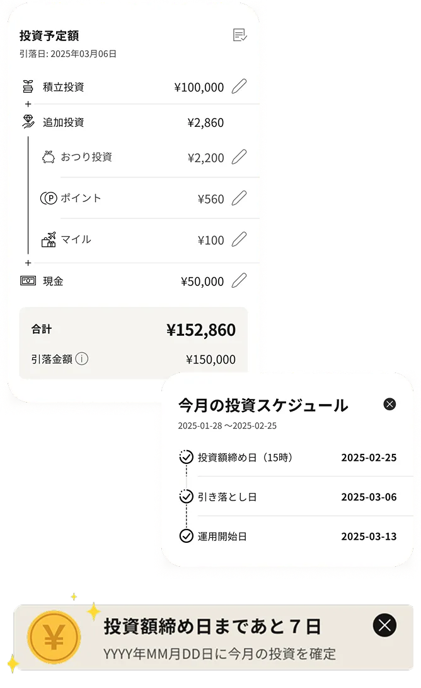
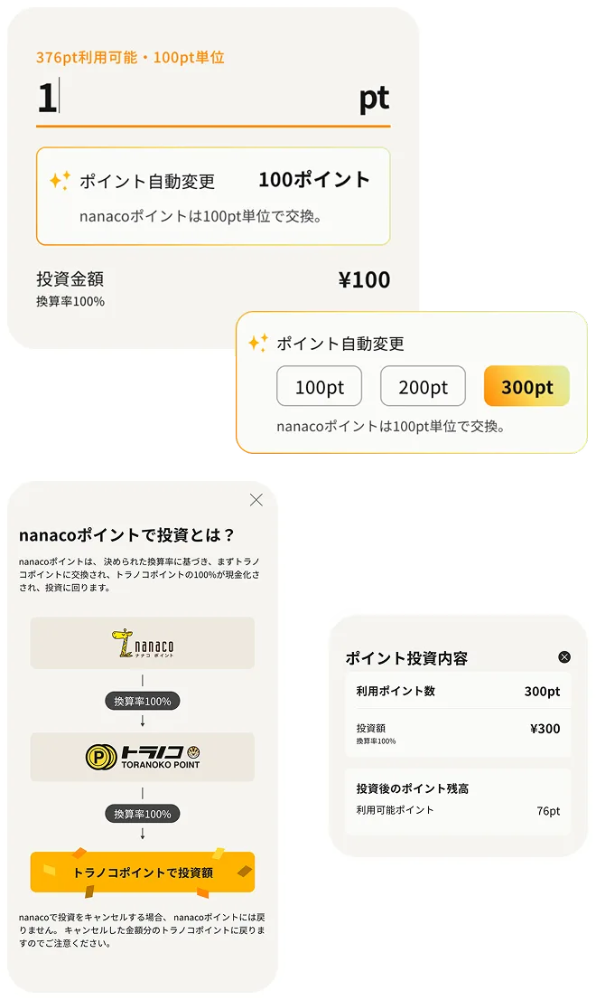
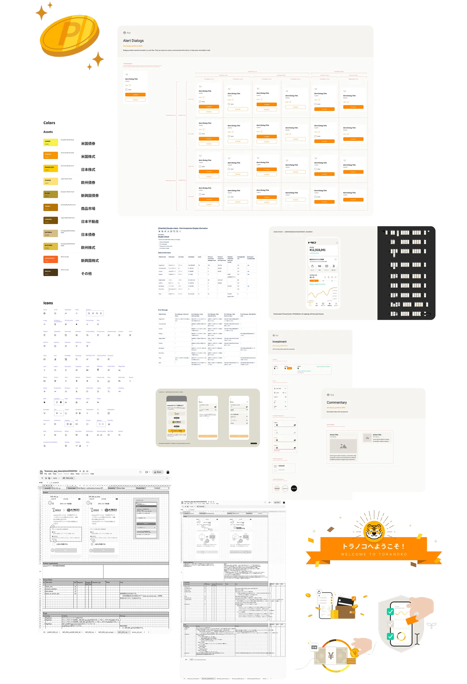

Toranoko
One designer. One product. 150,000 lives changed.
The situation
Toranoko had a problem most startups know too well: growth had stalled.
The app had 450,000 registered users — but only 150,000 were active. That's a 67% drop-off. The subscription model (¥500/month) meant every lost user was lost revenue. Every month.
The deeper issue? The product was never designed. For five years, business teams had mocked up screens in Excel spreadsheets and shipped them straight to engineers. Features piled on without coherence. Onboarding confused new users. The KYC process bled signups. The interface felt like it belonged to 2017.
They told users what to do. They never cared about how it felt to do it.
They didn't need a redesign. They needed a designer. I was the first — and only — one they hired.
The insight
The product needed a philosophy, not a facelift
The app had accumulated five years of features without a unifying vision. My job wasn't to make it prettier — it was to make it make sense. Every screen needed to answer one question: does this help someone start investing with confidence?
Consistency is the missing product
As an investor myself, I knew: the hardest part of investing isn't picking stocks — it's showing up every month. Dollar-cost averaging beats market timing. But Toranoko had no way to automate recurring investments.
I didn't find this on a roadmap. I pitched it — not as a UX feature, but as a revenue engine. Monthly investors become active subscribers. Active subscribers see progress. Progress builds trust. Trust builds retention.
Compliance isn't the enemy — misplacement is
The marketing team insisted their questionnaire was a must. Two full pages of questions, buried in the middle of the KYC flow — questions that had nothing to do with the product, which wasn't even personalized. Users were rushing through them just to reach the finish line, giving garbage data in the process.
I didn't remove their questions. I relocated them. After KYC submission, users wait approximately two days for profile screening. That's dead time — and a perfect window. I moved the marketing questionnaire to this waiting period, where users had time to think and answer honestly instead of racing through a signup flow.
The result: marketing got better data, not less. Users got a faster path to investing. And the 8-step KYC process became 5 — not by cutting, but by choreographing.
"Don't remove — relocate."
The work
Rebuilt onboarding from scratch
The old onboarding had no branding, no explanation of how Toranoko worked, and no trust signals. First-time investors landed in the app confused.
I designed an educational introduction flow, ran A/B tests on fee transparency, and made a deliberate choice: show the ¥500 monthly fee upfront. Version A (transparent) had higher drop-offs at signup — but lower churn after. We chose honesty over vanity metrics.
- A/B Testing
- Fee Transparency
- Trust-first Design
- Educational Flow
- +34% Completion
Streamlined KYC — the art of negotiation
Reduced the identity verification flow from 8 steps to 5 through cross-functional negotiation with compliance, business, and marketing teams. The key move: integrating fund selection and bank account linking within the KYC flow — so completing verification meant you were ready to invest immediately, not starting another process.
- Cross-functional Negotiation
- 8 → 5 Steps
- +21.2% Completion

Designed the monthly investment feature
This was my pitch, my fight, and my proudest contribution. I proposed recurring monthly investments — arguing in the language of business: predictable revenue, higher LTV, reduced churn. But I believed in it as an investor: DCA works. Consistency beats timing.
The design challenge: integrate a new investment method alongside spare-change rounding and point investments without creating confusion. The solution was a unified investment dashboard that treated all three methods as complementary, not competing.

- Dollar-Cost Averaging
- Revenue Strategy
- 28.2% Opt-in
- +17.1% Retention
Full UI overhaul
Redesigned every screen across iOS, Android, and web. Replaced the Excel-born interface with a modern, minimal design system. Built the component library, defined typography and color tokens, and established spacing guidelines — all as a solo designer.
- Design System
- iOS, Android, Web
- Component Library
- Solo Designer



Investment schedule clarity
Users expected real-time trades. Toranoko processes investments on a schedule. This mismatch generated confusion and support tickets. I designed a timeline-based schedule UI with tooltips explaining processing windows — turning a source of frustration into a trust-building moment.
- Timeline UI
- Tooltip System
- -35% Support Tickets

Point investment simplification
Multiple loyalty point partners, each with unique exchange rules. Users couldn't understand conversion rates. I redesigned the flow with real-time calculation previews and clear partner-specific rule displays.
- Real-time Calculation
- Multi-partner Integration
- Conversion Preview

Design handoff
Ensured a structured and seamless handoff to engineers by providing clear documentation, design specifications, and interactive prototypes. The goal was to minimize ambiguity, improve efficiency, and ensure the final product matched the intended user experience.
Design Documentation & Specs
- Delivered detailed design specifications via Figma, including spacing, typography, color tokens, component states, and form validation rules for KYC, onboarding, and investment flows.
- Created annotated UI screens with explanations on interaction behavior, edge cases, and fallback states.
- Provided responsive design guidelines to ensure cross-device consistency.
Design System for Scalability
- Developed a comprehensive design system to ensure consistency across all UI elements.
- Delivered a component-based system including reusable UI components, iconography, color hierarchy, typography, spacing guidelines, and auto-layout structures for scalability.
- Maintained a shared component library in Figma for future updates and scalability.
Interactive Prototypes
- Built high-fidelity, interactive prototypes in Figma to demonstrate user flows, micro interactions, animations, and button states.
- Used clickable prototypes in usability testing to validate interactions before handoff.
Developer Collaboration & Handoff Meetings
- Hosted handoff meetings to walk engineers through complex interactions, edge cases, error handling, and scalability considerations.
- Established a shared Slack channel & Confluence documentation for real-time Q&A.
- Maintained a feedback loop, working closely with engineers to address technical constraints and refine designs where needed.
Post-Handoff Support & Design QA
- Conducted design reviews during development to catch inconsistencies early.
- Used Figma Inspect & Zeplin for precise spacing, colors, and assets.
- Performed UI/UX testing in staging environments before the final release to ensure pixel-perfect execution.

The impact
| Metric | Before | After | Change |
|---|---|---|---|
| Onboarding completion | 24.1% | 32.3% | +34% |
| Onboarding to investment | 15.4% | 22.1% | +43.5% |
| KYC completion | 51.8% | 62.8% | +21.2% |
| Monthly investment opt-in | -- | 28.2% | New feature |
| Session duration | 3m 12s | 4m 01s | +25.5% |
| Task completion | 68.4% | 76.3% | +11.6% |
| App Store rating | 3.4 | 3.7 | +0.3 |
| 90-day retention (monthly investors) | baseline | +17.1% | Relative improvement |
| Schedule support inquiries | baseline | -35% | Reduction |
The lesson
Sell design in the language of the room. I believed in monthly investments as a user. I pitched it as revenue. Same feature, different frame — that's how ideas survive.
Don't remove — relocate. Stakeholders aren't obstacles. Their needs are real. The craft is finding where those needs serve users and the business best. Moving the marketing questionnaire to the screening wait didn't just fix the flow — it gave marketing better data than they were getting before.
Transparency compounds. Showing fees upfront cost us signups. It earned us trust. Trust earned us retention. Retention earned us everything.
One designer can own a product — if the system is strong enough. The design system wasn't a deliverable. It was how I scaled myself across 13 engineers and three platforms.